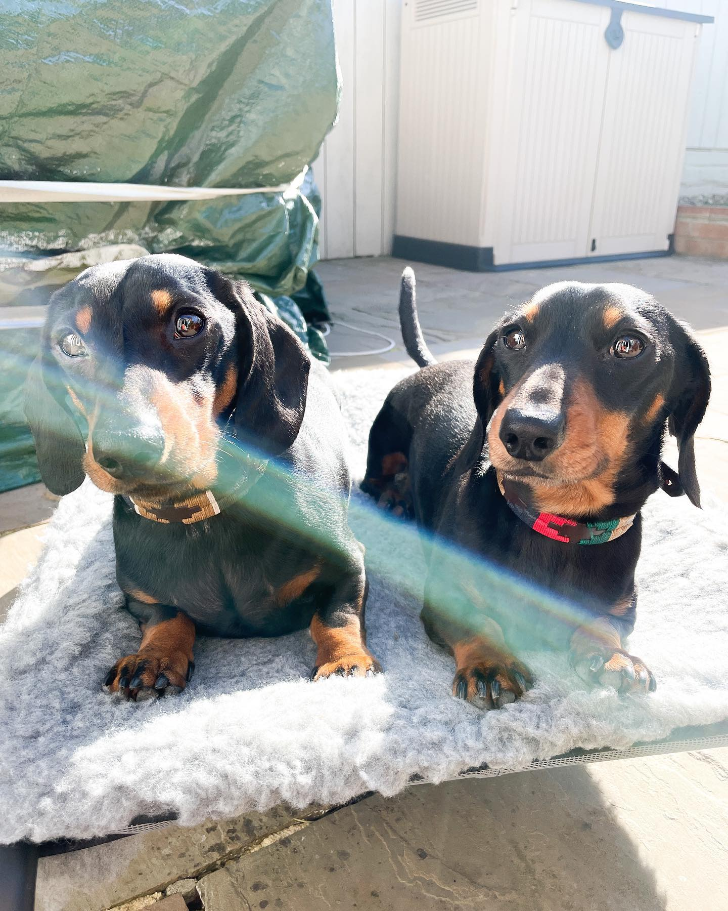
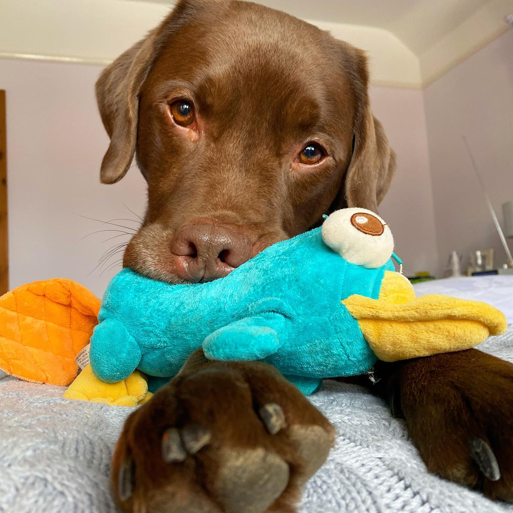

關於本站
歡迎光臨本站
這裡是介紹我家貓主子姊妹的秘密基地，有大量的可愛照片。
!!!未經許可請勿擅自複製轉載!!!
我家的貓咪
*小町(KOMACHI-Female)
出生不到兩個月就到家的貓大姐。 從出生就是養在溫室裡的花朵，所以非常怕生，只要聽到有門開的聲音就會先躲起來，所以就算是我家的客人也難以見到
*小夏(KOMATSU-Female)

為了讓貓貓有更多陪伴，在一年後抱回來的貓妹妹~ 原本是在埼玉縣某個煤礦場出生的小野貓。和小町不同，是個性活潑親人，愛玩，愛吃，愛睡的元氣寶寶
飼主介紹
- 暱稱 :
- 小王
- 職業 :
- 前端工程師
- mail :
- info@gmail.com
- instagram :
- click me